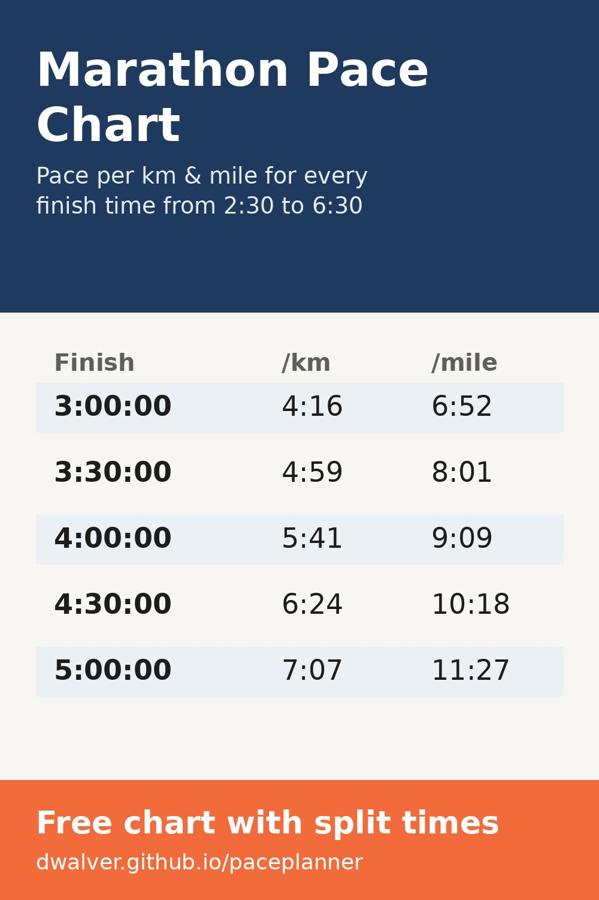

Marathon pace chart (2:30:00 to 6:30:00)
This marathon pace chart shows the pace per kilometre and per mile for every finish time from 2:30 to 6:30, plus the 10 km, halfway and 30 km split times you need to be on track. Times are for even pacing over 42.195 km (26.22 miles). For a time between two rows, use the pace calculator.
| Finish time | Pace /km | Pace /mile | km/h | 10 km split | Half split | 30 km split |
|---|---|---|---|---|---|---|
| 2:30:00 | 3:33 | 5:43 | 16.9 | 35:33 | 1:15:00 | 1:46:39 |
| 2:35:00 | 3:40 | 5:55 | 16.3 | 36:44 | 1:17:30 | 1:50:12 |
| 2:40:00 | 3:48 | 6:06 | 15.8 | 37:55 | 1:20:00 | 1:53:45 |
| 2:45:00 | 3:55 | 6:18 | 15.3 | 39:06 | 1:22:30 | 1:57:19 |
| 2:50:00 | 4:02 | 6:29 | 14.9 | 40:17 | 1:25:00 | 2:00:52 |
| 2:55:00 | 4:09 | 6:40 | 14.5 | 41:28 | 1:27:30 | 2:04:25 |
| 3:00:00 | 4:16 | 6:52 | 14.1 | 42:40 | 1:30:00 | 2:07:59 |
| 3:05:00 | 4:23 | 7:03 | 13.7 | 43:51 | 1:32:30 | 2:11:32 |
| 3:10:00 | 4:30 | 7:15 | 13.3 | 45:02 | 1:35:00 | 2:15:05 |
| 3:15:00 | 4:37 | 7:26 | 13.0 | 46:13 | 1:37:30 | 2:18:39 |
| 3:20:00 | 4:44 | 7:38 | 12.7 | 47:24 | 1:40:00 | 2:22:12 |
| 3:25:00 | 4:52 | 7:49 | 12.3 | 48:35 | 1:42:30 | 2:25:45 |
| 3:30:00 | 4:59 | 8:01 | 12.1 | 49:46 | 1:45:00 | 2:29:18 |
| 3:35:00 | 5:06 | 8:12 | 11.8 | 50:57 | 1:47:30 | 2:32:52 |
| 3:40:00 | 5:13 | 8:23 | 11.5 | 52:08 | 1:50:00 | 2:36:25 |
| 3:45:00 | 5:20 | 8:35 | 11.3 | 53:19 | 1:52:30 | 2:39:58 |
| 3:50:00 | 5:27 | 8:46 | 11.0 | 54:31 | 1:55:00 | 2:43:32 |
| 3:55:00 | 5:34 | 8:58 | 10.8 | 55:42 | 1:57:30 | 2:47:05 |
| 4:00:00 | 5:41 | 9:09 | 10.5 | 56:53 | 2:00:00 | 2:50:38 |
| 4:05:00 | 5:48 | 9:21 | 10.3 | 58:04 | 2:02:30 | 2:54:11 |
| 4:10:00 | 5:55 | 9:32 | 10.1 | 59:15 | 2:05:00 | 2:57:45 |
| 4:15:00 | 6:03 | 9:44 | 9.9 | 1:00:26 | 2:07:30 | 3:01:18 |
| 4:20:00 | 6:10 | 9:55 | 9.7 | 1:01:37 | 2:10:00 | 3:04:51 |
| 4:25:00 | 6:17 | 10:06 | 9.6 | 1:02:48 | 2:12:30 | 3:08:25 |
| 4:30:00 | 6:24 | 10:18 | 9.4 | 1:03:59 | 2:15:00 | 3:11:58 |
| 4:35:00 | 6:31 | 10:29 | 9.2 | 1:05:10 | 2:17:30 | 3:15:31 |
| 4:40:00 | 6:38 | 10:41 | 9.0 | 1:06:22 | 2:20:00 | 3:19:05 |
| 4:45:00 | 6:45 | 10:52 | 8.9 | 1:07:33 | 2:22:30 | 3:22:38 |
| 4:50:00 | 6:52 | 11:04 | 8.7 | 1:08:44 | 2:25:00 | 3:26:11 |
| 4:55:00 | 6:59 | 11:15 | 8.6 | 1:09:55 | 2:27:30 | 3:29:44 |
| 5:00:00 | 7:07 | 11:27 | 8.4 | 1:11:06 | 2:30:00 | 3:33:18 |
| 5:05:00 | 7:14 | 11:38 | 8.3 | 1:12:17 | 2:32:30 | 3:36:51 |
| 5:10:00 | 7:21 | 11:49 | 8.2 | 1:13:28 | 2:35:00 | 3:40:24 |
| 5:15:00 | 7:28 | 12:01 | 8.0 | 1:14:39 | 2:37:30 | 3:43:58 |
| 5:20:00 | 7:35 | 12:12 | 7.9 | 1:15:50 | 2:40:00 | 3:47:31 |
| 5:25:00 | 7:42 | 12:24 | 7.8 | 1:17:01 | 2:42:30 | 3:51:04 |
| 5:30:00 | 7:49 | 12:35 | 7.7 | 1:18:12 | 2:45:00 | 3:54:37 |
| 5:35:00 | 7:56 | 12:47 | 7.6 | 1:19:24 | 2:47:30 | 3:58:11 |
| 5:40:00 | 8:03 | 12:58 | 7.4 | 1:20:35 | 2:50:00 | 4:01:44 |
| 5:45:00 | 8:11 | 13:10 | 7.3 | 1:21:46 | 2:52:30 | 4:05:17 |
| 5:50:00 | 8:18 | 13:21 | 7.2 | 1:22:57 | 2:55:00 | 4:08:51 |
| 5:55:00 | 8:25 | 13:32 | 7.1 | 1:24:08 | 2:57:30 | 4:12:24 |
| 6:00:00 | 8:32 | 13:44 | 7.0 | 1:25:19 | 3:00:00 | 4:15:57 |
| 6:05:00 | 8:39 | 13:55 | 6.9 | 1:26:30 | 3:02:30 | 4:19:31 |
| 6:10:00 | 8:46 | 14:07 | 6.8 | 1:27:41 | 3:05:00 | 4:23:04 |
| 6:15:00 | 8:53 | 14:18 | 6.8 | 1:28:52 | 3:07:30 | 4:26:37 |
| 6:20:00 | 9:00 | 14:30 | 6.7 | 1:30:03 | 3:10:00 | 4:30:10 |
| 6:25:00 | 9:07 | 14:41 | 6.6 | 1:31:15 | 3:12:30 | 4:33:44 |
| 6:30:00 | 9:15 | 14:52 | 6.5 | 1:32:26 | 3:15:00 | 4:37:17 |
Turn your goal time into a training plan
The free PacePlanner generator builds a 16-week marathon plan from your race date and goal time, with the target pace for every run. Prefer a spreadsheet you keep? The Marathon plan on Etsy fills in your dates and paces automatically in Excel or Google Sheets.
Build my free marathon planMarathon spreadsheet planCommon questions
What pace is a 4 hour marathon?
A 4:00:00 marathon is 5:41 per kilometre or 9:09 per mile, with a halfway split of 2:00:00.
What pace do I need for a sub-3 marathon?
A 2:59:59 marathon needs 4:15 per kilometre or 6:51 per mile, with a halfway split just under 1:30:00.
Should I run a negative split in a marathon?
Aim for even pacing, or a halfway split one to two minutes faster than half your goal at most. Runners who go out too fast usually slow dramatically after 30 km.
See also: 5K pace chart · 10K pace chart · Half marathon pace chart.
Save this chart for later:
